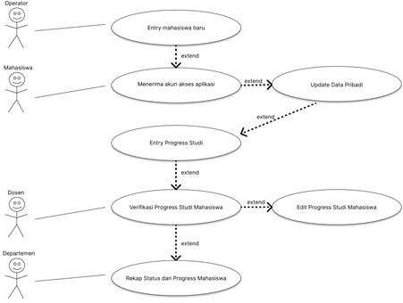
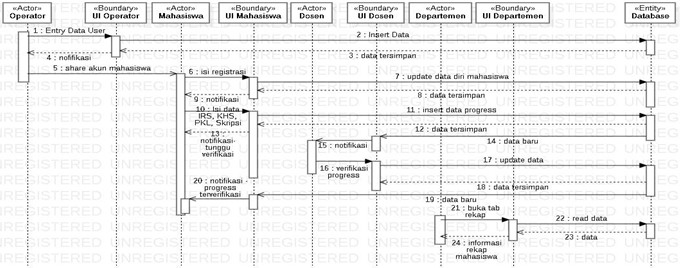

Project Details
PHP Vanilla
This project was developed using PHP as the core programming language for handling backend logic and data processing. PHP was chosen for its reliability in building dynamic web applications and its seamless integration with HTML. In this project, PHP is used to manage user authentication, display dynamic content such as the dashboard and course list, and handle basic data interactions. All processing is done on the server side, with the output rendered as web pages for the user. This approach replicates the basic flow of the SIAP Undip academic system in a simplified form, making it suitable as a learning project for web-based academic system development.
Workflow
SRS
UML
Wireframe
Implementation
Testing

SIAP-Clone
This project is a simplified clone of the SIAP Undip (Universitas Diponegoro Academic Information System) website, developed as part of a learning initiative to understand how academic information systems function. It simulates key features such as a student login page, a user dashboard displaying personal and academic details, a course registration system (KRS), and a class schedule viewer. While not a full-featured replica, this version highlights the core components commonly found in university portals.From a software design perspective, the project follows a modular and structured development process.
The interface is designed using a component-based approach, allowing better separation between layout, logic, and data. On the frontend, HTML, CSS, and JavaScript are used to create a responsive and interactive user experience. Backend integration is optional, but if implemented, it follows a simple MVC (Model-View-Controller) architecture using technologies such as PHP or Node.js with a MySQL database.
This architecture supports separation of concerns, which makes the code easier to maintain and scale.The design process began with requirement analysis and wireframing, followed by interface prototyping and functional development. Each module — such as login, KRS input, and schedule display — was designed independently to encourage reusability and clarity. This project demonstrates not only technical skills in web development but also a practical understanding of how to design and structure academic systems effectively.
- SRS
- Requirement Compilation (UML)
- Wireframe
- Implementation
- Testing
This project is a simplified clone of the SIAP Undip (Universitas Diponegoro Academic Information System) website, developed as part of a learning initiative to understand how academic systems function. It features a student login page, a user dashboard, course registration (KRS), and a class schedule viewer. Although not a full-featured replica, the project captures essential functionality and user flow of a real academic portal.
From a software design perspective, the system is built with a modular structure, using HTML, CSS, and JavaScript for the frontend, and optionally PHP or Node.js with a MySQL database for backend development. The software follows a simple MVC (Model-View-Controller) approach to separate logic, interface, and data layers.
A brief Software Requirement Specification (SRS) was created to define the system’s functional and non-functional requirements. This includes core features like user authentication, course input forms, and schedule display, as well as performance expectations such as responsive design and ease of use. The SRS guided the development process and ensured that each component addressed a specific user need while remaining scalable and maintainable.
To support the software design process, UML (Unified Modeling Language) was used to visualize the system’s structure and behavior. UML is a standardized modeling language commonly used in software engineering to describe system architecture through diagrams. In this project, simple UML diagrams such as Use Case Diagrams were used to illustrate user interactions with the system, while Class Diagrams helped define the structure of data and their relationships. Additionally, Sequence Diagrams were useful to represent the flow of logic in features like login and course registration. These diagrams provided a clear blueprint for development and improved communication of system design before implementation.
Use Case Diagram :
Activity Diagram :
Squence Diagram :
Entity Relationships Diagram :

Class Diagram Diagrams :
As part of the design phase, wireframes were created to plan the layout and structure of the user interface before starting development. A wireframe is a low-fidelity visual guide that represents the basic structure of a web page or application screen. It focuses on placement of elements such as navigation menus, buttons, forms, and content sections—without involving colors, graphics, or detailed styling. In this project, wireframes helped map out the user flow between the login page, dashboard, course registration form, and schedule viewer. They served as a blueprint for UI development and ensured that the interface remained user-friendly and logically organized.
Operator Sites :
Departemen Sites :
Dosen Sites :
Mahasiswa Sites :
The implementation phase involved translating the planned designs and specifications into a working web application. Based on the wireframes, UML diagrams, and requirements, each component of the system—such as the login form, dashboard, and KRS interface—was developed using HTML, CSS, and JavaScript. Optional backend features were implemented using PHP or Node.js along with a MySQL database to handle data processing and storage. This stage focused on writing clean, modular, and maintainable code while ensuring that the application matched both the design and functional expectations outlined during earlier stages.
Operator Sites :
Departemen Sites :
Dosen Sites :
Mahasiswa Sites :
At this stage, the system that has been built becomes a ready-to-use software. But before that, testing will be carried out to test the feasibility of the system whether the system is in accordance with the conditions that have been determined from the start. In the implementation of system testing, procedural preparation and the formation of a test plan are carried out. This is done to make it easier when testing the system.
The test plan is a stage that will be carried out to test the system that has been created. System testing this time was carried out using the black box method. The black box method is a testing method that is carried out by observing the results of system execution through test data and checking the functionality of the system created.
For more detail testing access file Testing.Docx in github files